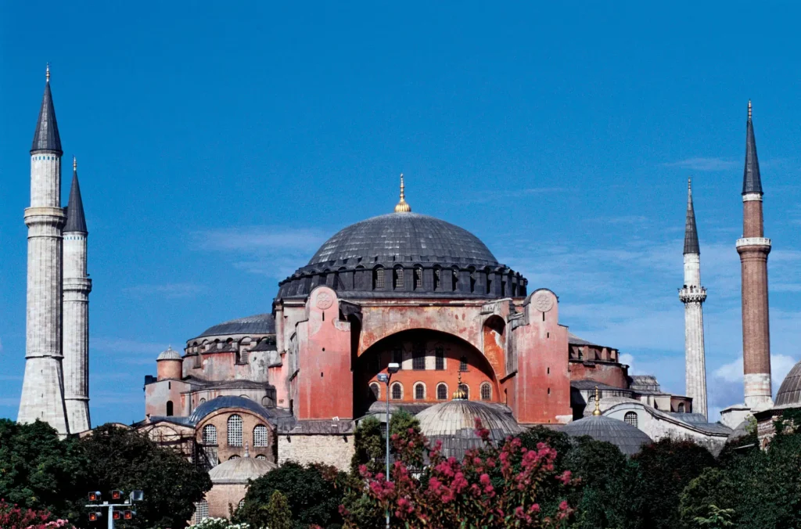

İstanbul’un Fethi
Osmanlıların Konstantinopolis’i 55 gün boyunca kuşattıktan sonra şehrin antik kara surlarını aşmasıyla, giderek zayıflayan Bizans İmparatorluğu sona ermiştir. 2.Mehmed, İstanbul’u karadan ve denizden kuşatırken, bir yandan da toplarla şehrin zorlu surlarını sürekli ateş altında tuttu. Şehrin düşmesi, bir zamanlar Hıristiyan Avrupa için Müslüman istilasına karşı güçlü bir savunma olan surları ortadan kaldırarak Osmanlı’nın Doğu Avrupa’ya doğru kesintisiz genişlemesine olanak sağladı. Fetih ile birlikte Konstantinopolis, İstanbul oldu. 2.Mehmed ise “Fatih” unvanını alarak Fatih Sultan Mehmed oldu.
15. yüzyılın ortalarına gelindiğinde, Balkan komşuları ve Roma Katolik rakipleriyle süregelen hâkimiyet mücadeleleri Bizans İmparatorluğu’nun İstanbul ve hemen batısındaki topraklardaki hâkimiyetini azaltmıştı. Dahası, İstanbul’un birçok yıkıcı kuşatmaya maruz kalmasıyla birlikte, 12. yüzyılda yaklaşık 400.000 olan şehir nüfusu 1450’lerde 40.000 ila 50.000 arasına düşmüştü. Surların içindeki arazinin büyük bölümünü geniş açık alanlar oluşturuyordu. Bizans’ın Avrupa’nın geri kalanıyla ilişkileri de son birkaç yüzyılda bozulmuştu: 1054 Bölünmesi ve İstanbul’un 13. yüzyıldaki Latin işgali, Ortodoks Bizanslılar ile Roma Katolik Avrupası arasında karşılıklı bir nefret oluşturmuştu. Bununla birlikte, Bizans’ın İstanbul’u kontrol etmesinin, Müslümanların Doğu Akdeniz’deki kara ve deniz kontrolüne karşı gerekli bir kale olduğu anlayışı da bir o kadar kökleşmişti.

Bizanslıların aksine, Osmanlı Türkleri 14. yüzyılın ikinci yarısında İstanbul’un batısındaki birçok Bizans şehrini fethederek kontrollerini neredeyse tüm Balkanlar’a ve Anadolu’nun büyük bir kısmına yaymışlardı. İstanbul’un kendisi de bu dönemde bir Osmanlı vasalı haline geldi. Macaristan, Osmanlılar için karadaki başlıca Avrupa tehdidiydi ve Venedik ile Cenova, Ege ve Karadeniz’in çoğunu kontrol ediyordu. Sultan II. Murad 1422’de İstanbul’u kuşattı, ancak imparatorluğun başka yerlerindeki bir isyanı bastırmak için kuşatmayı kaldırmak zorunda kaldı. Daha sonra oğlu II. Mehmed lehine tahttan feragat etti. Ancak, iki yıl sonra Hıristiyanları yendikten sonra iktidara geri döndü ve 1451’deki ölümüne kadar sultan olarak kaldı.
İkinci kez sultan olan II. Mehmed, babasının misyonunu tamamlamak ve İstanbul’u Osmanlılar için fethetmek niyetindeydi. 1452 yılında Macaristan ve Venedik ile barış antlaşmaları yaptı. Ayrıca Karadeniz ve Akdeniz arasındaki geçişi kısıtlamak için Boğaz’ın en dar noktasında bir kale olan Boğazkesen’in (daha sonra Rumelihisarı olarak anılacaktır) inşasına başladı. Mehmed daha sonra Macar silah ustası Urban’ı hem Rumelihisarı’nı silahlandırmak hem de İstanbul’un surlarını yıkabilecek kadar güçlü toplar yapmakla görevlendirdi. Mart 1453’e gelindiğinde Urban’ın topları Osmanlı başkenti Edirne’den İstanbul’un dış mahallelerine nakledilmişti. Nisan ayında, Karadeniz ve Marmara Denizi boyunca uzanan Bizans kıyı yerleşimlerini hızla ele geçiren Rumeli ve Anadolu’daki Osmanlı alayları Bizans başkentinin dışında toplandı. Donanmaları Gelibolu’dan yakındaki Diplokionion’a hareket etti ve sultanın kendisi de ordusunu karşılamak üzere yola çıktı.
Bu arada Bizans İmparatoru XI. Konstantin Palaeologus, Hıristiyan âlemindeki büyük güçlerden yaklaşan kuşatmada kendisine yardım etmelerini istedi. Macaristan yardım etmeyi reddetti ve Papa V. Nicholas adam göndermek yerine bu tehlikeli durumu, 1054’ten beri papalığın önceliği olan Ortodoks ve Roma Katolik kiliselerinin yeniden birleşmesi için bir fırsat olarak gördü. Ortodoks liderler birleşme lehinde oy kullandılar, ancak İstanbul halkı buna şiddetle karşı çıktı ve tepki olarak ayaklandı. Venedik ve Cenova’dan askeri destek geldi. Boğaz’da bir Venedik gemisine yapılan Osmanlı saldırısı, Venedik Senatosu’nun Bizans başkentine 800 asker ve 15 kadırga göndermesine neden oldu ve şu anda İstanbul’da bulunan birçok Venedikli de savaş çabalarını desteklemeyi seçti, ancak Venedik kuvvetlerinin büyük kısmı herhangi bir yardımda bulunamayacak kadar uzun süre ertelendi. Cenova’ya gelince, şehir devleti İstanbul’a 700 asker gönderdi ve bu askerlerin tamamı Ocak 1453’te başlarında Giovanni Giustiniani Longo olduğu halde İstanbul’a ulaştı. İmparator Konstantin XI, Giustiniani’yi kara savunmasının komutanı olarak atadı ve kışın geri kalanını şehri kuşatma için güçlendirmekle geçirdi.
15. yüzyılda İstanbul’un surları tüm Avrupa’daki en zorlu surlar olarak tanınıyordu. Kara surları 4 mil (6,5 km) boyunca uzanıyordu ve dış tarafında bir hendek bulunan çift sıra surdan oluşuyordu; ikisinden daha yüksek olanı 40 fit (12 metre) kadar yüksekti ve tabanı 16 fit (5 metre) kadar kalındı. Bu duvarlar, inşalarından bu yana geçen bin yıl boyunca hiç aşılmamıştı. Bitişikteki deniz duvarı Haliç ve Marmara Denizi boyunca uzanıyordu; bu son bölüm 20 feet (6 metre) yüksekliğinde ve 5 mil (8 km) uzunluğundaydı. Haliç boyunca çekilen büyük bir metal zincirle birleştirildiğinde, Konstantin şehrin savunmasının bir deniz saldırısını püskürtebileceğinden ve Hıristiyan Avrupa’dan yardım gelene kadar Mehmed’in kara kuvvetlerine dayanabileceğinden emindi. Ancak Konstantin’in şehrini savunma kapasitesi, savaş gücünün azlığı nedeniyle sekteye uğramıştı. Görgü tanığı Jacopo Tedaldi 30.000 ila 35.000 silahlı sivil ve sadece 6.000 ila 7.000 eğitimli asker olduğunu tahmin etmektedir. Giustiniani bu adamların çoğunu kuzey ve batıdaki kara surlarında yoğunlaştırmayı planlıyordu; bu surların merkezinin şehrin en savunmasız bölümü olduğunu gözlemlemişti. Küçük bir donanma filosu ve silahlı ticaret gemileri de zinciri savunmak üzere Haliç’te konuşlandırılmıştı. Ancak, dışarıdan destek olmadan İstanbul’un savunucuları çok zayıf kalacaktı.
Osmanlı kuşatmacıları Bizanslılardan ve müttefiklerinden sayıca çok üstündü. Karada 69 top eşliğinde 60.000 ila 80.000 arasında asker savaştı. Baltaoğlu Süleyman Bey, Diplokion’da konuşlanmış, tahminen 31 büyük ve orta boy savaş gemisinin yanı sıra yaklaşık 100 küçük tekne ve nakliye aracından oluşan bir filoya komuta ediyordu. Mehmed’in stratejisi çok açıktı: Filosunu ve kuşatma hatlarını kullanarak İstanbul’u her yönden abluka altına alacak, bir yandan da şehrin surlarını toplarla acımasızca dövecekti. Hıristiyan bir yardım kuvveti gelmeden önce surları aşmayı ya da başka bir şekilde teslim olmaya zorlamayı umuyordu.
6 Nisan’da Osmanlılar topçu ateşine başladılar ve surların bir bölümünü yıktılar. Kara surlarına 7 Nisan’da cepheden bir saldırı düzenlediler, ancak Bizanslılar onları püskürttü ve savunmayı onarmayı başardılar. Mehmed toplarını yeniden yerleştirmek için durakladıktan sonra ateşi yeniden açtı ve bundan sonra günlük bombardımanı sürdürdü.
12 Nisan’da sultan yakındaki iki Bizans kalesini zapt etmek üzere bir birlik gönderdi ve Baltaoğlu’na zincire hücum etmesini emretti. Filo iki kez geri püskürtüldü ve Baltaoğlu 17’si gecesine kadar Diplokionion’a çekildi; o gece Mehmed’in kara alayları surların Mesoteichon bölümüne saldırırken, Baltaoğlu da şehrin güneydoğusundaki Prens Adaları’nı ele geçirmek için harekete geçti. Ancak İstanbul’un savunucuları bir kez daha yerlerini korudu ve Baltaoğlu’nun adalardaki başarısı, Papa’dan gelen üç yardım gemisinin ve bir büyük Bizans gemisinin neredeyse hiç engellenmeden şehre ulaştığının ortaya çıkmasıyla onarılamaz bir şekilde gölgelendi. Osmanlı kadırgaları uzun Avrupa savaş gemilerini yakalamak için çok kısaydı ve Haliç filosunun yardımıyla savaş gemileri zinciri güvenli bir şekilde geçtiler. Donanmasının yenilgisini duyan Mehmed, Baltaoğlu’nun rütbesini elinden aldı ve yerine başkasını atadı.
Mehmed Haliç’i almaya ve Bizanslılara boyun eğmeleri için baskı yapmaya kararlıydı. Toplarından birini zincirin savunucularını vurabilecek şekilde eğdi ve ardından küçük gemilerini Boğaz’dan Haliç’e geçirmeyi planladığı yağlı ahşap bir rampa inşa etmeye başladı. 22 Nisan’a gelindiğinde gemiler zinciri bu şekilde aşmış ve zincirin kendisi hariç, şehri çevreleyen tüm suların kontrolünü ele geçirmişlerdi. Savunmacılar Osmanlı filosunun Boğaz’da kalan kısmına saldırmayı denediler ama yenildiler.
İstanbul’u tamamen kuşatan Mehmed, 29 Mayıs’a kadar kara surlarını top ateşine tutmaya devam etti. Osmanlı topları birkaç gedik açtı, ancak bunların çoğu askerlerin geçemeyeceği kadar dardı. Şehrin savunucuları geceleri surları onarmaya devam etti ve hasar gören Aziz Romanus Kapısı ile Blachernae bölgesindeki alanları güçlendirdi. Osmanlı işçileri 29 Mayıs’ın erken saatlerinde şehri çevreleyen hendeği doldurdu. Şafaktan hemen önce sultan İstanbul’a koordineli bir topçu, piyade ve deniz saldırısı başlattı. Aziz Romanus Kapısı’na ve Blachernae surlarına yapılan iki hücum girişimi şiddetli bir direnişle karşılaştı ve Osmanlı askerleri geri çekilmek zorunda kaldı. Mehmed, bu kez 3.000 yeniçeriden oluşan kendi saray alaylarından biriyle kapıya üçüncü bir saldırı emri verdi. Küçük bir grup başka bir kapıdan geçerek bir kulenin tepesine ulaştı ama Giustiniani surların üzerindeyken Osmanlı top ateşiyle ölümcül şekilde yaralanana kadar savunmacılar tarafından neredeyse yok ediliyordu. Arkaya taşındı ve yokluğu saflar arasında karışıklığa ve moral bozukluğuna yol açtı. Bu durum sultanın başka bir yeniçeri alayı göndermesine ve Aziz Romanus Kapısı’ndaki iç surları ele geçirmesine olanak sağladı.
Savunmacıların bozguna uğramasıyla Venedik ve Ceneviz savaşçılarının birçoğu Haliç’teki gemilerine çekildi. İmparator XI. Konstantin’in ya gedik yakınlarında savaşırken ya da bir kaçış teknesine binerken öldürüldüğü bildirilmektedir. Sultan şehrin tamamen yağmalanmasını önlemeye çalışsa da, birçok Ortodoks kilisesinin tahrip edildiği ilk yağma dönemine izin verdi. İstanbul’un büyük bir kısmı emniyete alındığında, Mehmed bizzat şehrin sokaklarından geçerek tüm Hıristiyan âleminin en büyüğü olan büyük Ayasofya katedraline gitti ve burayı Ayasofya camisine dönüştürdü. Dua etmek için durdu ve ardından tüm yağmalamaların derhal durdurulmasını istedi. Sultan böylece Bizans başkentinin fethini tamamlamıştır.
Mehmed ve ordusu, İstanbul’un düşmesinden sonra işlerin idaresinde oldukça ölçülü davrandılar. Halkı ve soyluları katletmekten büyük ölçüde kaçındılar, bunun yerine onları kendi devletlerine fidye olarak göndermeyi ve öncelikle sadece teslim olduktan sonra savaşanları idam etmeyi tercih ettiler. Mehmed şehri çok çeşitli geçmişlerden ve inançlardan gelen insanlarla yeniden doldurdu ve başkentini Edirne’den İstanbul’a taşıyarak çok kültürlü bir imparatorluk için çok kültürlü bir iktidar merkezi sağladı. Ayrıca kendisini Kayser-i Rûm (“Roma’nın Sezarı”), Roma İmparatorluğu’nun ve tüm tarihi topraklarının mirasçısı olarak görmeye başladı. Bu iddiasını, 15. yüzyılın sonlarına doğru hem Balkanlar’ı hem de Yunanistan’ı tamamen boyunduruğu altına alan bir dizi seferle ortaya koydu.
Mehmed’in İstanbul’daki zaferi Hıristiyanlık için Doğu ile ilişkilerinde ciddi bir değişimi temsil ediyordu. Artık hem Osmanlılara karşı uzun süreli bir tampondan hem de Karadeniz’e erişimden yoksun olan Hıristiyan krallıklar, batıya doğru genişlemeyi durdurmak için Macaristan’a bel bağlamıştı. Birçok modern akademisyen de bu olay sonucunda Yunanlıların İtalya’ya göç etmesinin Orta Çağ’ın sonu ve Rönesans’ın başlangıcı olduğu konusunda hemfikirdir.